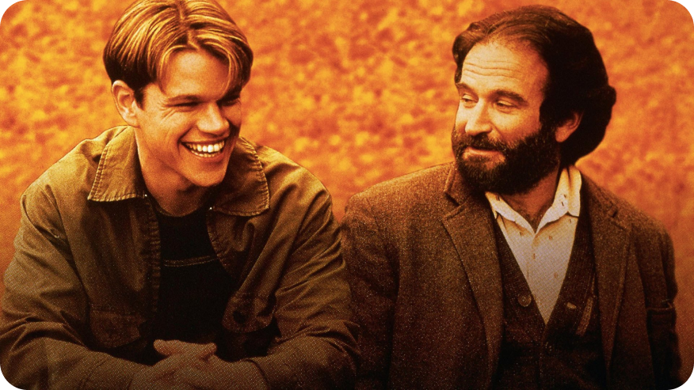

Una inolvidable lección de vida en el Indomable Will Hunting
El cine nos emociona, nos hacer reir, sufrir, llorar...Y a veces, hay escenas de películas, que hastan nos cambian un poco la vida. No nos cansamos de ver esta joya dirigida por Gus Van Sant, en 1997. Will es un jovene inadaptado rebelde con una inteligencia asombrosa, especialmente para las matemáticas. La vida le pone en su camino a un psiquiatra solitario y con pocas ganas de vivir porque siente que ya ha vivido todo lo que tenía que vivir: Sean, un psicoanalista, freudiano, con infancia de malos tratos, enamorado de su trabajo, viudo de un gran amor.

Podríamos quedarnos con miles de escenas de la película, pero elegimos ésta en un parque de Boston, que nos emociona especialmente.